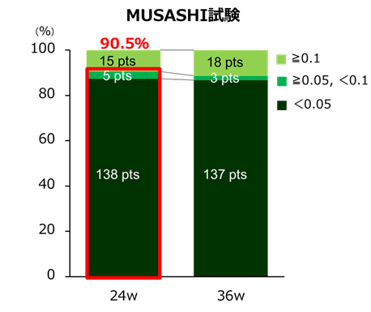
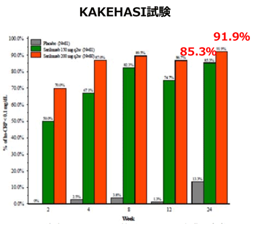

11. KEVはACTよりも血中濃度半減期（t1/2）が長いです

KEVはACTよりも血中濃度半減期（t1/2）がKEV200mg：3.49±1.35day、KEV150mg：2.34±0.334day、ACT：162mg:1.6±0.2dayと長いです。

確かにKEV半減期はACTに比較して長いですが、IL-6受容体阻害治療において重要なことは長いt1/2ではなく、有効血中濃度の維持≒CRP陰性化であると考えます。ACTの有効血中濃度はTCZ濃度1μg/mL以上であり、この維持が重要です。両剤の日本P3を比較するとその値は変わりません。


T1/2の長さが問題ではなく、有効血中濃度以上を維持できるかどうかが重要
アクテムラ社内資料、ケブザラ審査報告書より抜粋